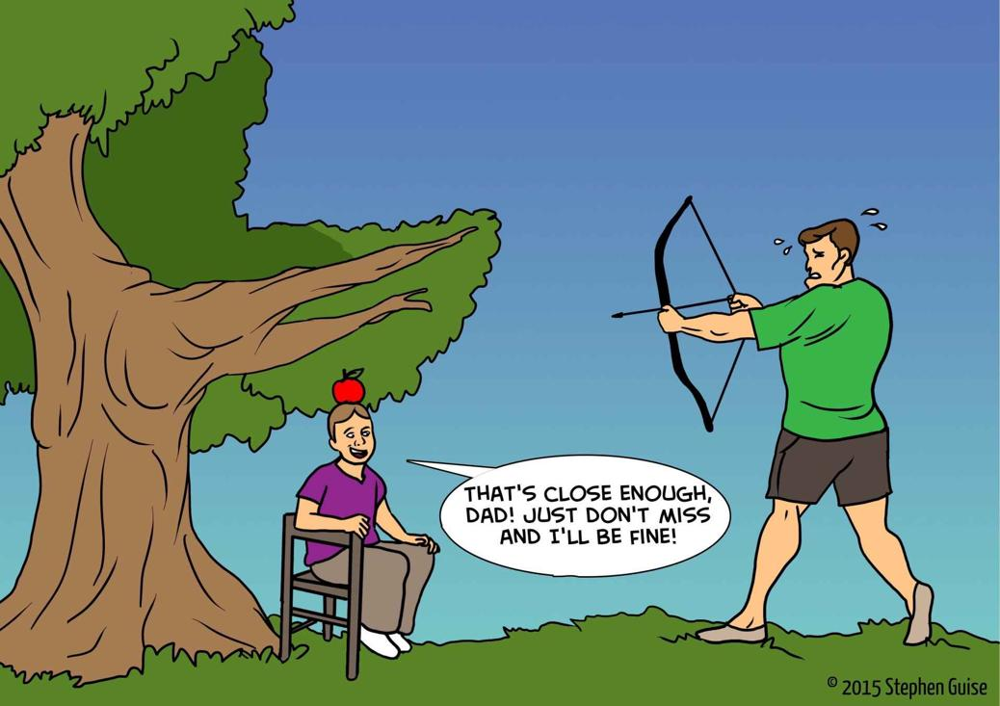

Chapter 8
Concern over Mistakes
“Mistakes are a part of being human. Appreciate your mistakes for what they are: precious life lessons that can only be learned the hard way. Unless it's a fatal mistake, which, at least, others can learn from.”
~ Al Franken
